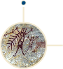

Voltar para Home
Falta o texto daqui!
Falta o texto daqui!
Falta o texto daqui!
Falta o texto daqui!

Herança Indígena
Herança portuguesa
Herança africana
Primeiros Europeus
Imigração européia
Herança italiana
Herança oriental
Herança nipônica
Presença americana
Nova imigração africana